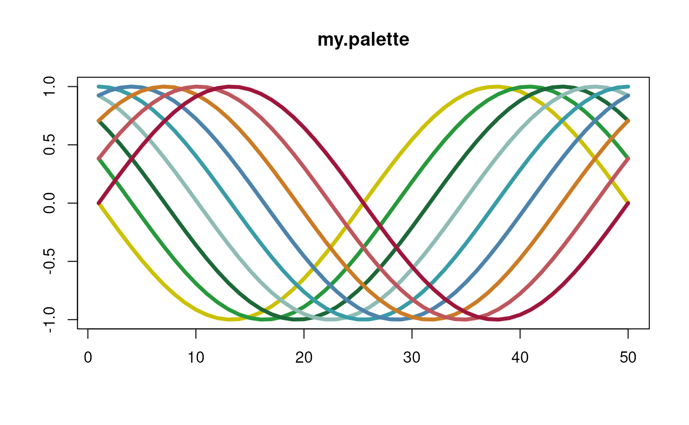
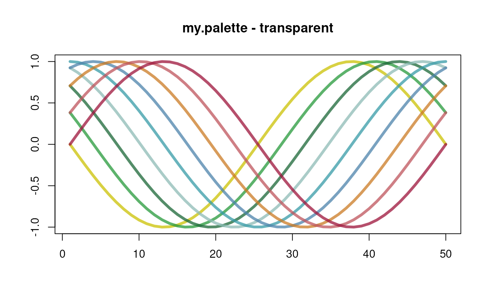
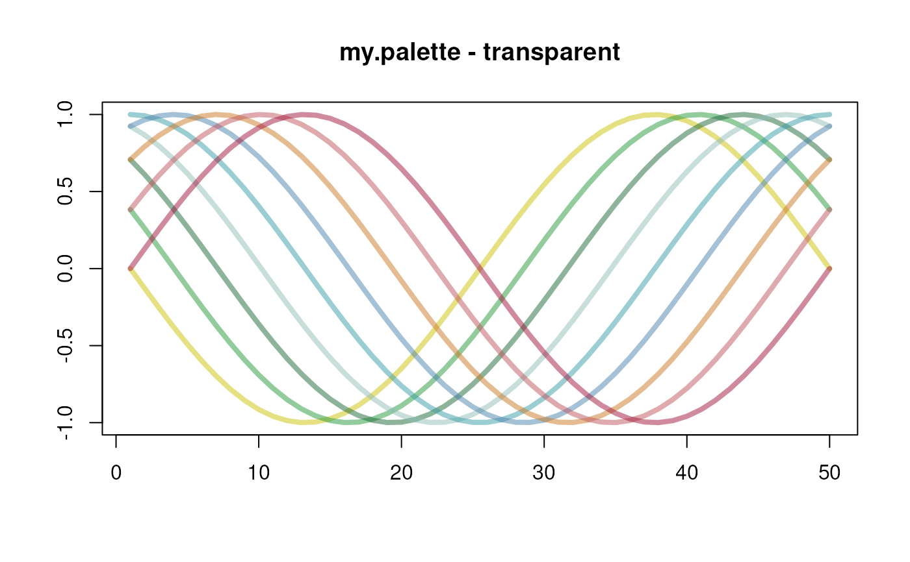
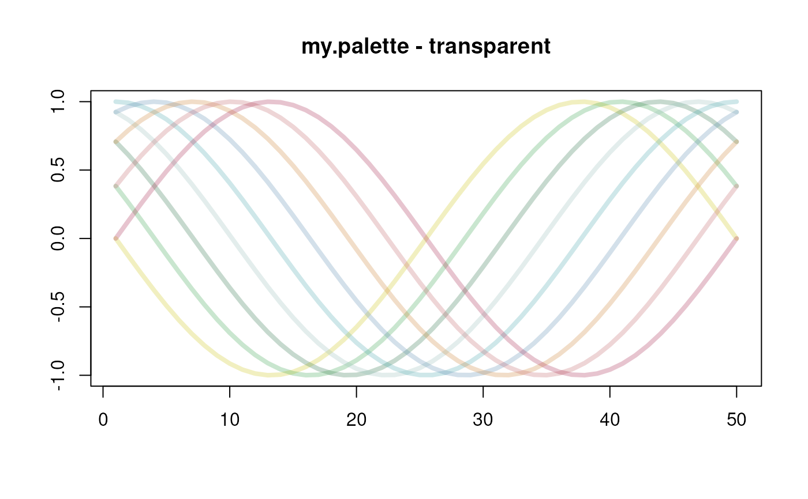

R color to transparent conversion.
Value
A character vector with elements of 9 characters, "#" followed by the red, blue, green and alpha values in hexadecimal (after rescaling to 0 ... 255).
Examples
col2transparent("green", 50)
#> [1] "#00FF007F"
## Demonstrate the colors 1:8 in different palettes using a custom matplot()
sinplot <- function(main=NULL) {
x <- outer(
seq(-pi, pi, length.out = 50),
seq(0, pi, length.out = 9),
function(x, y) sin(x - y)
)
matplot(x, type = "l", lwd = 4, lty = 1, col = 1:9, ylab = "", main=main)
}
my.palette <- c(
"#CBC106", "#27993C", "#1C6838",
"#8EBCB5", "#389CA7", "#4D83AB",
"#CB7B26", "#BF565D", "#9E163C")
palette(my.palette); sinplot("my.palette")

## 25% transparent
palette(col2transparent(palette(my.palette), 25));
sinplot("my.palette - transparent")

## 50% transparent
palette(col2transparent(palette(my.palette), 50));
sinplot("my.palette - transparent")

## 75% transparent
palette(col2transparent(palette(my.palette), 75));
sinplot("my.palette - transparent")
